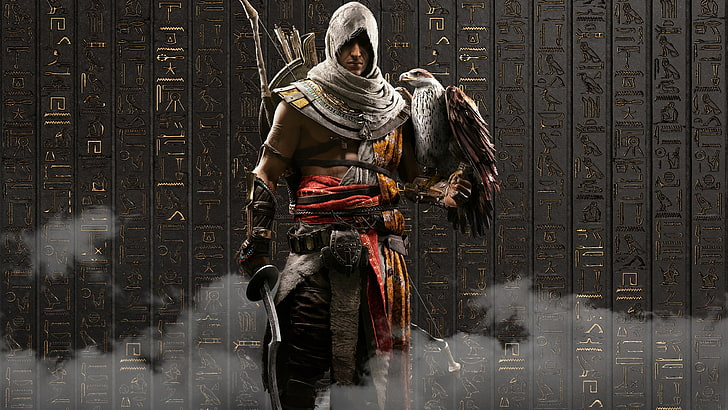
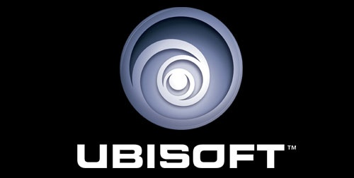

Assasin´s Creed Origens
Mesmo estando entre aqueles que gostaram de Assassin’s Creed: Syndicate, é difícil não admitir que a franquia estava um tanto estagnada quando ele chegou às lojas em 2015. Mesmo com diversas equipes espalhadas pelo mundo, a Ubisoft não conseguiu escapar do fato de que um ciclo anual de lançamentos trazia certas limitações para a evolução de sua fórmula. Chegando após um “ano sabático”, Assassin’s Creed Origins cumpre bem a tarefa de contar a origem do conflito entre assassinos e templários, ao mesmo tempo em que dá a oportunidade de explorar o Egito antigo na época em que Cleópatra ascendeu ao poder — tudo isso enquanto apresenta um dos protagonistas mais carismáticos e humanos da série.
Acompanhamos a jornada de Bayek de Siuá, uma figura marcada por uma tragédia pessoal que parte pelo mundo em busca de vingança. Ele é um “medjai”, figura que se assemelha a uma espécie de xerife responsável pelo bem dos cidadãos egípcios — obrigação que leva o personagem a se envolver em uma história repleta de disputas de poder, traição e falsas esperanças.
Entre e fique pela história
Uma das maiores qualidades de Assassin’s Creed Origins é o fato de que, ao voltar para o ponto em que a disputa entre assassinos e templários, a Ubisoft conseguiu entregar um roteiro que se livra da grande quantidade de “bagagem” acumulada com o passar dos anos. Isso beneficia tanto os novos jogadores, que não tem que chegar “sabendo tudo” quanto aos veteranos que não aguentavam mais os longos trechos introdutórios explicando as atividades das duas facções.

Bayek e Aya Bayek e Aya O maior acerto do jogo é focar na figura de Bayek, que rapidamente se torna um protagonista fácil de se importar. Ele não é somente uma “máquina de vingança” sem personalidade, que não liga para nada além de satisfazer seus desejos — em diversos momentos vemos nele um homem complexo que, mesmo afetado pela tristeza, não deixa de sorrir ao ver um amigo ou passar um tempo se divertindo com crianças.
Em outras palavras, o protagonista não deixa de “viver” para se encaixar em um papel pré-determinado. O resultado disso é um personagem com quem é fácil se relacionar mesmo quando levamos em consideração que nunca vamos escalar uma pirâmide ou adquirir habilidades suficientes para pular de lugares altos sem se machucar.
Durante o primeiro dia da feira Gamescom 2017 — em Colônia, na Itália —, a Ubisoft revelou o novo trailer de Assassin's Creed: Origins, abordando um pouco mais sobre o enredo do game e alguns personagens que aparecerão ao longo da trama.
Ambientado no Antigo Egito, o próximo Assassin's Creed trará personalidades históricas como Júlio César e Cleópatra, mostrando o conflito pelo poder entre os líderes e como isso irá levar o protagonista Bayek a arriscadas missões de assassinato.
Assassin's Creed: Origins será lançado no dia 27 de outubro para Xbox One, Playstation 4 e PC. O título já está disponível em pré-venda em todas as plataformas.